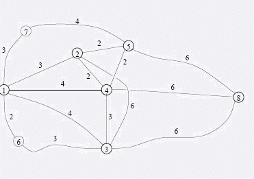

第一行包含3个整数N(2<=N<=20000),M(1<=M<=200000),K(0<=K<=20),意义如上所述。
FGD想从成都去上海旅游。在旅途中他希望经过一些城市并在那里欣赏风景，品尝风味小吃或者做其他的有趣
的事情。经过这些城市的顺序不是完全随意的，比如说FGD不希望在刚吃过一顿大餐之后立刻去下一个城市登山，
而是希望去另外什么地方喝下午茶。幸运的是,FGD的旅程不是既定的，他可以在某些旅行方案之间进行选择。由于
FGD非常讨厌乘车的颠簸，他希望在满足他的要求的情况下，旅行的距离尽量短，这样他就有足够的精力来欣赏风
景或者是泡MM了^_^.整个城市交通网络包含N个城市以及城市与城市之间的双向道路M条。城市自1至N依次编号，道
路亦然。没有从某个城市直接到它自己的道路，两个城市之间最多只有一条道路直接相连，但可以有多条连接两个
城市的路径。任意两条道路如果相遇，则相遇点也必然是这N个城市之一，在中途，由于修建了立交桥和下穿隧道
，道路是不会相交的。每条道路都有一个固定长度。在中途，FGD想要经过K(K<=N-2)个城市。成都编号为1，上海
编号为N,而FGD想要经过的N个城市编号依次为2,3,…,K+1.举例来说，假设交通网络如下图。FGD想要经过城市2,3,
4,5，并且在2停留的时候在3之前，而在4,5停留的时候在3之后。那么最短的旅行方案是1-2-4-3-4-5-8,总长度为1
9。注意FGD为了从城市2到城市4可以路过城市3,但不在城市3停留。这样就不违反FGD的要求了。并且由于FGD想要
走最短的路径，因此这个方案正是FGD需要的。
第一行包含3个整数N(2<=N<=20000),M(1<=M<=200000),K(0<=K<=20),意义如上所述。
只包含一行，包含一个整数，表示最短的旅行距离。
8 15 4
1 2 3
1 3 4
1 4 4
1 6 2
1 7 3
2 3 6
2 4 2
2 5 2
3 4 3
3 6 3
3 8 6
4 5 2
4 8 6
5 7 4
5 8 6
3
2 3
3 4
3 5
19
 上面对应于题目中给出的例子。